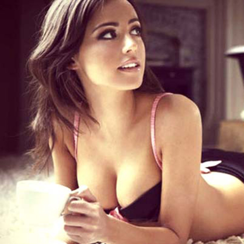

1845-1850: Erste konkrete Pläne für den Bau einer Alpenbahn sehen bei der Streckenwahl den Lukmanier und den Splügen im Vordergrund. Nach zähem Streit um die Linienführung setzen sich 1863 die Gotthard-Befürworter durch. Unter dem Vorsitz des mächtigen Zürcher Unternehmers und Politikers Alfred Escher (hier rechts von einem Schauspieler an einer Jubiläumsfeier dargestellt) gründen sie die Grosse Gotthardvereinigung.

1. Oktober 1872: Offizieller Baubeginn am Gotthardtunnel.

27. Juli 1875: Ein Streik der vorwiegend italienischen Mineure für Lohnerhöhungen und bessere Arbeitsbedingungen wird von einer Bürgerwehr blutig niedergeschlagen. Dieses Kunstwerk von Vincenzo Vela zeigt Mineure als «Die Opfer der Arbeit» («Le vittime del lavoro»).

19. Juli 1879: Gesundheitlich und finanziell ruiniert, stirbt Louis Favre bei einer Tunnelinspektion an einem Herzversagen. Der Genfer Bauunternehmer hatte 1872 den Zuschlag für die Bauarbeiten erhalten.
29. Februar 1880: Durchschlag des Gotthardtunnels, des damals mit 15 Kilometern längsten Tunnels der Welt.

31. Mai/1. Juni 1882: Inbetriebnahme der Gotthardlinie.
1947: Der Ingenieur Eduard Gruner beschreibt in der Zeitschrift «Prisma» die Idee eines Gotthard-Basistunnels als Teil eines Schnellbahnsystems. Diese Grafik zeigt die neuen Basistunnel der Neat im europäischen Schienenverbund.

1963-70: Die vom Bund eingesetzte Kommission Eisenbahntunnel durch die Alpen (KEA) prüft verschiedene Basistunnel-Lösungen. Sie empfiehlt schliesslich den Bau eines Basistunnels am Gotthard und den Ausbau der Lötschberglinie auf Doppelspur. Auf diesem Bild von 1970 spricht der damalige Bundespräsident Hans-Peter Tschudi (SP) beim Baubeginn für den Strassentunnel in Göschenen.
5. September 1980: Nach fünfjähriger Bauzeit wird der 16,9 Kilometer lange Gotthard-Strassentunnel eröffnet. Hier ist die Baustelle der Schöni-Brücke mit dem Portal des Naxbergtunnels auf der Gotthard-Nordrampe bei Göschenen im Kanton Uri im Juni 1978 zu sehen.

27. September 1992: In der Volksabstimmung sprechen sich 63,6 Prozent für den Bau der Neat aus.

22. September 1993: Die Bauarbeiten für den Gotthard-Basistunnel beginnen in Polmengo TI mit dem Sondierstollen.

1993-1998: Nach einem Streit um die Rentabilität der Neat redimensionieren Bundesrat und Parlament das Projekt (u.a. Bau des Lötschberg mit nur einer Spur). Dass der Gotthard Basistunnel überhaupt gebaut werden konnte, war zwischenzeitlich höchst unsicher. Hier sieht man Pierre-Alain Urech, Generaldirektor der SBB (mitte), Dumeni Columberg, Nationalrat (links) und Luzi Bärtsch, Regierungsrat (rechts), im Mai 1996 in Sedrun, als die Zuversicht grösser war.

29. November 1998: Der Bundesbeschluss über Bau und Finanzierung von Infrastrukturvorhaben des öffentlichen Verkehrs (FinöV), der auch die Neat-Finanzierung sicherstellt, wird an der Urne mit 63,5 Prozent Ja angenommen. SBB- Generaldirektionspräsident Benedikt Weibel freut sich am Abstimmungsfest in Erstfeld über den Erfolg.

4. November 1999: Tunnelanstich in Amsteg, Uri. In Silenen wurde der Eingang des Zugangsstollens für den Neat Gotthard- Basistunnel gesprengt. Der Teufel wurde dabei aufgescheucht und aus dem Gotthard vertrieben.
2. Juni 2006: Baubeginn am Ceneri-Basistunnel. Die Eröffnung ist für 2020 geplant. Hier eine Sprengung für den Zugangsstollen am 11. September 2007 auf der Baustelle Sigirino.
9. Dezember 2007: Inbetriebnahme des Lötschberg-Basistunnels. Die Aufnahme von 2010 zeigt Arbeiter im Seitenstollen in Goppenstein, die im Zuge der Beschäftigungsmassnahme 'Tunneljob Wallis' der Walliser Regierung beim Bau des Lötschberg-Basistunnel mitschaffen.

3. Februar 2009: Die Piora-Mulde im Gotthard-Basistunnel, ein gefürchtetes geologisches Hindernis, wird überwunden. Dieses Bild von 1996 zeigt Bohrungen bei der geologischen Besonderheit im Gotthard-Massiv.
15. Oktober 2010: Erster Hauptdurchschlag: Die Oströhre des Gotthard-Basistunnels ist vollständig durchbrochen, die Mineure feiern.

23. März 2011: Durchschlag der Weströhre. Mineure schwingen Fahnen und feiern, nachdem die Tunnelbohrmaschine «Heidi» den letzten Abschnitt in der Weströhre des Gotthard-Basistunnels durchbrochen hat.
Seit 2010 läuft im Basistunnel der Einbau der Bahntechnik und der Testbetrieb. Auf den 1. Juni 2016 ist die offizielle Eröffnung des Basistunnels mit viertägigen Feierlichkeiten angesetzt, mit dem Fahrplanwechsel am 11. Dezember 2016 soll der neue Bahntunnel regulär in Betrieb gehen.